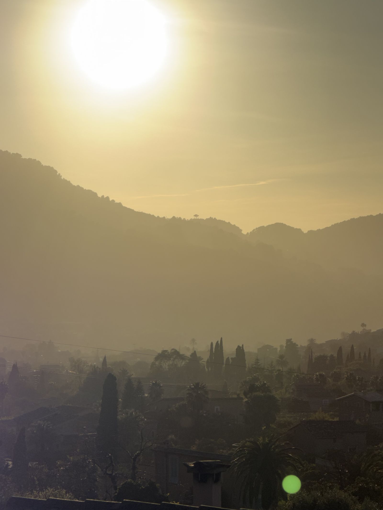

Fornalutx · Tramuntana · Mallorca
Forkert kodeord — prøv igen
Fornalutx · Tramuntana · Mallorca
En guide fra Eva & Kennet
Vi er kommet på Mallorca i over 15 år. Det startede med triathloncamp og Ironman — halvdistancer og fulde. Øen tiltrak os som cyklister, og vi har tilbragt mange timer i sadlen her oppe i Tramuntana.
En god ven gjorde os opmærksomme på Fornalutx. Vi er kommet tilbage igen og igen — til den lille brolagte landsby i dalen, hvor ingen har travlt og alt er, som det altid har været.
Denne guide er ikke skrevet for at sælge stedet. Det taler for sig selv. Den er til jer — fordi vi gerne vil dele det vi selv holder af.
Fornalutx er base. Resten af Tramuntana er jeres legeplads.
— Eva & Kennet
01 — Casa Hammerby
Huset på 120 m² er fordelt over fire etager og bevarer de originale elementer fra opførselsåret 1900.
Det ligger i hjertet af Fornalutx, kun få skridt fra pladsen. Huset har en smuk entré med originale fliser, tre dobbeltværelser, tre badeværelser, vaskerum, stue, fuldt udstyret køkken og en tagterrasse med vidunderlig udsigt over bjergene.
Fornalutx er kåret til en af Spaniens smukkeste landsbyer — ikke én, men flere gange. Brolagte gader, stentrapper, appelsintræer der læner sig ind over murene.
Landsbyen har ca. 500 beboere og ingen trafiklyskryds. Udsigten ud over dalen mod Tramuntana er der hele dagen. Om morgenen lugter det af appelsin.
Mallorca er en helårsdestination, men årstiderne er meget forskellige. Turister: ★ Stille · ★★ Moderat · ★★★ Travlt · ★★★★ Højsæson · ★★★★★ Peak
| Måned | Temp. | Turister | Bemærkning |
|---|---|---|---|
| Januar | 10–15° | ★ | Stille, grønt, lokalt |
| Februar | 11–16° | ★ | Pro-cykelhold træner her |
| Marts | 13–18° | ★★ | Perfekt for cyklister |
| April | 15–20° | ★★★ | Påske kan ramme her |
| Maj | 18–24° | ★★★ | ★ Vores anbefaling |
| Juni | 22–28° | ★★★★ | Varmt, travlt |
| Juli | 25–32° | ★★★★★ | Peak sæson |
| August | 26–33° | ★★★★★ | Peak sæson |
| September | 23–29° | ★★★★ | Stadig varmt |
| Oktober | 19–24° | ★★★ | ★ Vores anbefaling |
| November | 15–20° | ★★ | Roligt og smukt |
| December | 11–16° | ★ | Julestemning i bjergene |
Vores personlige anbefaling: Maj og oktober er de måneder hvor øen er sig selv. Februar og marts er perfekte for cykelentusiaster.
Ferrocarril de Sóller — et af Mallorcas bedste oplevelser. Afgår fra Plaça Espanya.
Den gamle træsporvogn kører frem og tilbage — perfekt til en eftermiddag uden program.
Fra Fornalutx til Port de Sóller, Deià, Valldemossa og Palma. En af de smukkeste ruter på Mallorca.
Vores faste taxa. Kender hvert eneste sving.
Boutique-hotel i traditionelt stenhus. Kun voksne. Pool og restaurant Ritma.
Charmerende hotel i gammelt kloster. Kapellet er nu hotellets bedste suite.
Familiedrevet, kun voksne. Saltvandpool med bjergudsigt.
700+ appelsin- og citrontræer. To pools. 600m fra torvet.
Kun voksne. 7 værelser i restaureret købmandshus fra 1800-tallet.
02 — Praktisk
Alt hvad I skal vide inden og under jeres ophold.
Netværk: Casa Hammerby
Kode: Copenhagen
Ankomst: Brug nøglebrikken til at slå alarmen fra.
Dør: Lås ved at hive håndtaget helt op.
Afgang: Tryk knappen øverst til venstre (mand forlader hus).
Nøgler ligger i skålen i køkkenet.
Oplader i øverste skuffe i kommoden til højre i køkkenet.
Skal bestilles i forvejen — nemmest på WhatsApp.
Bed dem holde nede ved parkeringspladsen ved Carrer del Sol.

03 — Steder at se
Mallorcas nordvestkyst er noget for sig. Tramuntana-bjergene, citruslunde, gamle stenhuse og landsbyer hvor ingen har travlt.
Kåret til en af Spaniens smukkeste landsbyer. Brolagte gader, stentrapper, appelsintræer der læner sig ind over murene.
I bunden af den gyldne dal. Modernistiske bygninger fra citrusindustriens storhedstid. Trætoget fra Palma er værd at prøve.
20 min. til fods fra Fornalutx. Herfra starter den stenlagte sti Barranc de Biniaraix.
Havnebyen ved bugten. Grønne bjerge og træsporvogn til Sóller.
Robert Graves slog sig ned her i 1929. Gå ned til Cala Deià for en svømmetur.
Karteuserkloster fra det 14. århundrede. Chopin og George Sand, 1838. UNESCO-listet.
Cykl ned ad den berømte snoningsvej — eller tag båden fra Port de Sóller.
Udsigtspunkt 6 km ovenfor Fornalutx. Restaurant heroppe. Særligt godt ved solnedgang.
La Seu fra det 13. århundrede. Et af Europas smukkeste gotiske katedraler.
Kloster fra det 13. århundrede, 525 m oppe. Godt udgangspunkt for vandreture.
04 — Mad
Her er de steder vi selv spiser — sorteret efter område. ★ er vores absolutte favoritter.
400 år gammelt stenhus ved pladsen. I dag drevet som vinbar — godt sted til et glas vin og noget tapas i hyggelige rammer. Book 2-3 dage i forvejen.
Vores favorit. På Hotel Can Verdera, drives af kok Marcos Servera.
Landsbybaren på pladsen. Her mødes de lokale.
Familiedrevet mallorcinsk mad. God udsigt fra terrassen.
Den ældste restaurant i Fornalutx — samme familie i over 50 år. Prøv pattegrisen fra spiddet.
Populær med vandrere. To terrasser og god simpel mad.
Yndlings tapas sted — et nøk opad. Book bord udenfor.
Moderne middelhavskøkken i ombygget chokoladefabrik. Hjemmelavet pasta er et must.
Michelin BIB Gourmand. Sæsonbestemte smagsmenuer.
God brasserie-mad, eget bageri og bedste terrasse på torvet.
Gourmet-tapas i sidegade nær torvet. Book bord online.
Moderne bistro på torvet. Fine dining-ambitioner i afslappede rammer.
Middelhavsk fusion lige ved katedralen på torvet. Smarte cocktails og levende musik fredag aften.
Mellemøstlig-inspireret på taget af Bikini Hotel. Fed stemning. Reservér bord.
Restaureret villa fra 1900 ved stranden. Josper-grillet fisk og kød.
Gammelt mallorcinsk hus på havnefronten. God cocktailmenu.
På Jumeirah-hotellet. Time det med solnedgangen.
Afslappet beach shack for enden af Repic-stranden. Farm-to-table, delerretter og udsigt over bugten — godt til en hel dag ved vandet.
Afslappet restaurant på havnepromenaden. Sæsonbestemt middelhavsmad, naturlige vine og udsigt over bugten — godt sted til frokost eller solnedgang.
Kok Marga Coll byder personligt velkommen. Menuen skifter dagligt. Som at spise hjemme hos nogen der kan lave mad.
"Lam-restauranten." Rustik gårdrestaurant halvvejs oppe ad Puig de Alaró.
Absolutte favorit. Kok Bernabé Caravotta. Moderne, kreativ gastronomi.
Tapasrestaurant bygget op om en 34-personers bar (Eddie Hart, Barrafina).
Michelin-stjernet, Andreu Genestra. Frokostmenuen er overraskende overkommelig.
Michelin-stjernet britisk kok på Mallorca i over 25 år.
Af Martín Berasategui (12 Michelin-stjerner). Tapas og baskiske retter.
Fine dining med jungle-stemning. Fusion-køkken med deleretter ved marinaen.
05 — Cykling
10 af de bedste stigninger på øen — alle kan køres fra Sóller-dalen som base.
| Rute | Distance | Stigning | GPX |
|---|---|---|---|
| Port Sóller | 20 km | 400 hm | ↓ gpx |
| Puig Major | 25 km | 700 hm | ↓ gpx |
| Deià | 30 km | 500 hm | ↓ gpx |
| Sa Calobra | 60 km | 2.000 hm | ↓ gpx |
| Valldemossa | 60 km | 1.000 hm | ↓ gpx |
| Port Valldemossa | 60 km | 1.400 hm | ↓ gpx |
| Esporles | 70 km | 1.200 hm | ↓ gpx |
| Palma | 70 km | 1.200 hm | ↓ gpx |
| Cala Tuent | 71,6 km | 2.069 hm | ↓ gpx |
| Port des Canonge | 74,2 km | 1.659 hm | ↓ gpx |
| Orient Loop — Clockwise | 75 km | 1.500 hm | ↓ gpx |
| Orient Loop — Anti-clockwise | 75,5 km | 1.504 hm | ↓ gpx |
| Puigpunyent | 86 km | 1.400 hm | ↓ gpx |
| Sobremunt | 88,8 km | 1.713 hm | ↓ gpx |
| Orient Udvidet — Anti-clockwise | 89,9 km | 1.637 hm | ↓ gpx |
| Coll de sa Batalla | 90 km | 1.500 hm | ↓ gpx |
| Orient Udvidet — Clockwise | 90 km | 1.700 hm | ↓ gpx |
| Randa | 110 km | 1.500 hm | ↓ gpx |
| Pollensa | 122 km | 1.950 hm | ↓ gpx |
| Coll de Femenia | 122 km | 1.977 hm | ↓ gpx |
| Andratx — Anti-clockwise | 125 km | 2.300 hm | ↓ gpx |
| Andratx — Clockwise | 126,5 km | 2.470 hm | ↓ gpx |
| Formentor | 150 km | 3.000 hm | ↓ gpx |
06 — Vandring
Alle ruter starter fra Sóller-dalen. Serra de Tramuntana er UNESCO-verdensarv — og man forstår hvorfor.
| Rute | Distance | Stigning | Sværhed | GPX |
|---|---|---|---|---|
| Biniaraix Loop | 6,5 km | 300 hm | Moderat | ↓ gpx |
| Binaraix (kort) | 6,6 km | 299 hm | Let | ↓ gpx |
| Biniaraix Loop — Kort | 6,9 km | 150 hm | Let | ↓ gpx |
| Port de Sóller | 8 km | 200 hm | Let | ↓ gpx |
| Puig de Sa Bassa Lukket tirs/tors + aug–jan weekender | 9,5 km | 658 hm | Moderat | ↓ gpx |
| Sóller — Biniaraix | 10,6 km | 340 hm | Moderat | ↓ gpx |
| Valldemossa — Deià | 12 km | 550 hm | Middel | ↓ gpx |
| Deià Tag badetøj | 12,3 km | 396 hm | Moderat | ↓ gpx |
| Puig des Verger | 14 km | 950 hm | Svær | ↓ gpx |
| Port de Sóller → Fornalutx | 16,7 km | 436 hm | Moderat | ↓ gpx |
| Far de Cap Gros | 17 km | 345 hm | Moderat | ↓ gpx |
| Sa Calobra Tag færgen fra Port de Sóller | 18 km | 950 hm | Svær | ↓ gpx |
| Basin de Cuber | 18,2 km | 1.124 hm | Svær | ↓ gpx |
| Extreme Hiking | 21 km | 1.000 hm | Meget svær | ↓ gpx |
07 — Løb
Trail running i Tramuntana-bjergene. Alle ruter starter fra Sóller-dalen.
| Rute | Distance | Stigning | GPX |
|---|---|---|---|
| Biniaraix Loop | 6 km | 134 hm | ↓ gpx |
| Biniaraix Loop — Lang | 8 km | 295 hm | ↓ gpx |
| Sa Bassa | 10 km | 670 hm | ↓ gpx |
| Biniaraix Loop — Op | 12 km | 900 hm | ↓ gpx |
| Far des Cap Gros | 17 km | 345 hm | ↓ gpx |
| Port de Sóller Loop | 19 km | 739 hm | ↓ gpx |
| Far des Cap Gros — Lang | 19,3 km | 501 hm | ↓ gpx |
| Basin de Cuber | 22 km | 1.083 hm | ↓ gpx |